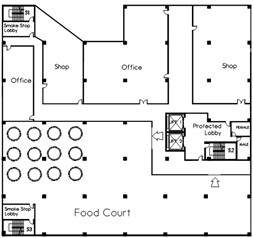
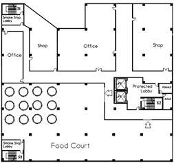

Jalan Keluar Keselamatan

Jalan Keluar Keselamatan ni adalah satu sistem laluan yang direka khas untuk pastikan kita semua, yang duduk atau bekerja dalam bangunan tu, boleh keluar dengan selamat dan cepat bila ada bahaya (contohnya, kebakaran) dan sampai ke tempat yang betul-betul selamat di luar bangunan. Ia memang sangat penting dalam reka bentuk bangunan yang mementingkan keselamatan nyawa.
Tujuan Utama Jalan Keluar Keselamatan:
- Evakuasi Cepat dan Selamat: Matlamat utamanya adalah untuk pastikan semua orang dalam bangunan, tak kira lah kanak-kanak, orang tua, atau yang kurang upaya, dapat sampai ke tempat selamat sebelum bahaya (seperti api, asap, atau runtuhan bangunan) mengancam nyawa. Kita kena keluar secepat mungkin.
- Akses untuk Pasukan Penyelamat: Walaupun fokus utama jalan keluar ni untuk kita melarikan diri, laluan-laluan ni juga penting untuk bomba dan pasukan penyelamat masuk ke dalam bangunan bila ada kecemasan. Mereka gunakan laluan ni untuk selamatkan kita dan memadamkan kebakaran.
Elemen-Elemen Penting Dalam Reka Bentuk Jalan Keluar Keselamatan:
- Jumlah dan Lokasi Jalan Keluar:
Minimum Dua Jalan Keluar - Untuk kebanyakan bangunan, terutamanya yang besar atau berisiko tinggi, wajib ada sekurang-kurangnya dua jalan keluar yang berasingan dan tak bersambung. Jika satu jalan terhalang disebabkan api atau asap, kita masih ada jalan lain yang selamat untuk digunakan.
Terpisah Secara Strategik - Jalan keluar ini perlu disusun dengan bijak supaya jika berlaku kebakaran di satu-satu kawasan, ia takkan menyekat semua jalan keluar. Jarak antara dua jalan keluar itu pun tidak boleh kurang dari 5 meter.
Akses Mudah - Dari mana-mana saja kita berada dalam bangunan, kita mesti ada laluan yang jelas dan tidak terhalang untuk sampai ke salah satu jalan keluar tu. Jangan ada almari atau barang-barang yang menyekat laluan. - Laluan Keluar:
Laluan Jelas dan Bebas Halangan - Koridor, lorong, dan tangga yang membentuk laluan keluar ni mesti sentiasa kosong dan bersih dari sebarang barang yang boleh menghalang atau melambatkan kita hendak keluar. Jangan sesekali meletak kotak atau barang perabot di laluan ni.
Lebar yang Cukup - Lebar laluan ni perlu bersesuaian dengan berapa ramai orang yang dijangka akan menggunakannya. Selalunya, ada peraturan yang tetapkan lebar minimum untuk pastikan aliran orang keluar jadi efisien dan tidak sesak.
Jarak Perjalanan - Ada had jarak maksimum yang dibenarkan dari tempat paling jauh dalam bilik atau tingkat tu, sampai ke pintu masuk ke laluan evakuasi yang selamat atau jalan keluar. Tujuannya untuk pastikan kita tidak mengambil masa terlalu lama untuk sampai ke tempat selamat. - Tangga Kecemasan:
Terlindung - Tangga kecemasan, terutamanya di bangunan bertingkat, mesti terletak dalam ruangan terkepung yang dilindungi oleh dinding setebal 115mm dan pintu api. Ini untuk mengelakkan asap dan api masuk ke dalam tangga, jadi tangga tu kekal selamat sepanjang proses evakuasi.
Pengudaraan dan Lampu Kecemasan - Tangga mesti mempunyai sistem pengudaraan yang bagus (sama ada secara semulajadi atau mekanikal) untuk mengelakkan/ mengeluarkan asap dan memberi pengudaraan, serta mempunyai lampu kecemasan yang akan menyala apabila bekalan elektrik terputus.
Tanpa Halangan - Tangga ni tidak boleh dijadikan tempat menyimpan barang atau dihalang dalam apa jua cara. Ia adalah laluan hidup mati. - Pintu Kecemasan:
Tahan Api - Pintu yang memisahkan zon api atau melindungi laluan keluar mesti mempunyai tahap ketahanan api yang tertentu (contohnya, FD30 untuk 30 minit, FD60 untuk 60 minit). Ini bermakna pintu tu boleh tahan api untuk satu tempoh masa yang ditetapkan.
Membuka ke Arah Jalan Keluar - Pintu-pintu di laluan kecemasan, terutamanya di tempat ramai orang, mesti terbuka ke arah jalan keluar. Ini penting untuk mengelakkan orang berasak dan tersekat bila semua orang menolak pintu serentak.
Mudah Dibuka - Pintu ni mesti senang untuk dibuka dari arah evakuasi, tidak perlu dikunci. Salah satu pilihan yang ada adalah menggunakan "panic bar" atau "push bar" – cuma tolak je terus terbuka.
Penutup Automatik - Pintu api mesti ada penutup automatik. Ini penting supaya pintu tu akan sentiasa tertutup rapat lepas kita lalu, jadi fungsi tahan apinya kekal dan asap tidak masuk. - Papan Tanda dan Pencahayaan Kecemasan:
Tanda Keluar - Papan tanda "KELUAR" atau simbol anak panah tu kena jelas, terang, dan mudah nampak di sepanjang laluan evakuasi. Selalunya tanda ni akan menyala sendiri (illuminated) atau menggunakan teknologi khas (photoluminescent) supaya nampak walaupun gelap atau berasap.
Lampu Kecemasan - Sistem lampu kecemasan mesti dipasang untuk menerangi laluan evakuasi secara automatik apabila bekalan elektrik utama terputus. Ini penting sangat untuk mengelakkan panik dan pastikan kita nampak jalan keluar. - Tempat perhimpunan (Assembly Points): Selepas kita berjaya keluar dari bangunan, kita mesti diarahkan ke tempat berkumpul yang selamat yang dah ditetapkan. Tempat ni mesti jauh dari bangunan, cukup luas, dan senang nak dicapai. Di sinilah kita akan berkumpul dan kira bilangan orang untuk pastikan semua selamat.
Empat Peringkat Pengungsian
Pengungsian diandaikan mempunyai empat peringkat iaitu:-
- Peringkat pertama: pelepasan dari bilik atau kawasan bermulanya kebakaran.

- Peringkat kedua: pelepasan dari pemetakan yang mula terbakar ke jalan keluar terakhir, masuk ke dalam tangga terlindung atau pemetakan yang bersebelahan. Tempat keluar mendatar adalah satu jalan keluar dari sesuatu petak atau bangunan ke petak atau bangunan bersebelahan pada paras yang lebih kurang sama. Kemudian ke tangga terlindung atau ke tempat keluar terakhir sama ada secara terus atau melalui koridor terlindung.
Jalan keluar mendatar ni macam laluan "shortcut" yang selamat kalau berlaku kebakaran dalam bangunan. Daripada kena lari turun tangga sampai bawah atau keluar terus dari bangunan, jalan keluar mendatar ni membolehkan kita berpindah dari satu zon atau pemetakan (bahagian bangunan yang dikawal api) ke satu lagi zon atau pemetakan yang sudah disahkan selamat. Ia sangat berguna dalam bangunan yang besar dan kompleks, contohnya hospital, pusat beli-belah, atau bangunan pejabat yang tinggi-tinggi.
Ia ibarat macam ada "bilik kebal" di sebelah, jadi kita boleh pindah ke bilik kebal tu bila ada kecemasan, tanpa perlu keluar dari keseluruhan bangunan.
Komponen-komponen Penting Jalan Keluar Mendatar
Jom kita tengok satu persatu komponen yang membuatkan jalan keluar mendatar ni berkesan:
- Bilangan pintu keluar yang cukup. Penting sangat untuk pastikan ada pintu keluar yang banyak dan cukup untuk bilangan orang yang dijangka ada dalam bangunan tu. Kalau tak cukup, nanti semua orang berebut nak keluar, jadi lambat dan boleh jadi bahaya ("bottleneck"). Kalau satu pintu tidak boleh digunakan disebabkan kebakaran, kita masih ada pintu lain. Peraturan bangunan memang sudah tentukan berapa bilangan minimum pintu keluar berdasarkan berapa ramai orang yang boleh ada dalam sesuatu kawasan itu.
- Kelebaran pintu yang mencukupi. Bayangkan kalau pintu sempit, orang panik nak keluar mesti berhimpit-himpit, dan melambatkan proses evakuasi. Pintu yang cukup lebar akan melancarkan pergerakan orang, lagi-lagi di masa kecemasan. Saiz minimum pintu ni pun ada dalam piawaian keselamatan.
- Pintu keluar ada tempoh ketahanan api yang dibenarkan. Ini perkara paling kritikal untuk jalan keluar mendatar. Pintu-pintu ni mesti jenis pintu api (fire-rated door) yang boleh tahan api untuk satu tempoh masa tertentu (contohnya, 30 minit, 60 minit, atau lebih lama). Tujuannya supaya pintu tu dapat menahan api dan asap daripada merebak dari satu zon ke zon yang selamat di sebelah. Ini memastikan "zon selamat" tu kekal betul-betul selamat.
- Ada papan tanda "KELUAR" yang jelas, terang, dan mudah nampak. Ini sangat penting untuk pandu kita ke jalan keluar mendatar. Papan tanda ni selalunya akan bercahaya sendiri (macam tanda "EXIT" hijau yang menyala) atau pakai teknologi khas (photoluminescent) supaya ia tetap nampak walaupun elektrik terputus atau banyak asap. Ini dapat mengurangkan kekeliruan dan cepatkan evakuasi.
- Pintu jalan keluar mendatar ni mesti ada mekanisme yang boleh tutup sendiri (self-closing devices). Maknanya, selepas je kita lalu, pintu tu akan tertutup rapat balik secara automatik. Selalunya akan ada notis "SENTIASA DALAM KEADAAN TERTUTUP" di pintu tu, sebagai peringatan supaya kita jangan sesekali biarkan pintu tu terbuka. Jika terbuka, fungsi tahan apinya akan hilang.
- Pintu keluar mesti boleh dibuka dengan mudah dari arah nak keluar dan tidak perlu kunci. Kadang-kadang akan ada palang panik (panic bar) atau tombol tekan (push bar) yang hanya perlu ditolak saja untuk buka pintu. Prinsipnya, sesiapa saja boleh buka pintu tu dengan cepat dan selamat tanpa sebarang halangan.
- Ada kemudahan pencahayaan dan pengudaraan yang cukup. walaupun jalan keluar mendatar ni selalunya koridor dalaman, penting untuk pastikan ada lampu kecemasan yang cukup dan berfungsi apabila bekalan elektrik terputus. Lampu ni akan terangi laluan keluar. Pengudaraan yang baik juga penting untuk bantu kawal asap jika ada kebakaran di sebelah, walaupun dengan pintu api yang betul, asap sepatutnya tak mudah masuk ke zon selamat.
 

- Peringkat ketiga: pelepasan dari lantai yang mula terbakar ke lantai terbawah. Tempat keluar menegak merupakan sesuatu tangga terlindung yang diasingkan daripada bangunan dengan menggunakan dinding sekat. Dinding sekat ini hendaklah mempunyai tempoh ketahan api (TKA) tidak kurang daripada setengah jam. Dalam kurungan tangga ini perlu dipasangkan dengan lampu tetap. Pintu kurungan tangga hendaklah boleh menutup sendiri dan mempunyai tempoh ketahan api tidak kurang daripada setengah jam.
Komponen-komponen Utama Tangga Kecemasan (Jalan Keluar Menegak)
Tangga kecemasan atau tangga kebakaran ni sangatlah penting, terutamanya untuk bangunan tinggi. Ia berfungsi sebagai laluan keluar kita dari satu tingkat ke tingkat lain, selalunya turun ke tingkat bawah atau terus keluar bangunan bila berlaku kecemasan macam kebakaran. Berikut adalah penjelasan setiap komponen penting tangga kecemasan:
- Kelebaran Tangga yang Cukup. Bayangkan jika tangga itu sempit sangat, nanti semua orang nak keluar serentak mesti berebut dan lambat. Jadi, lebar tangga kena cukup luas. Ini penting supaya semua orang boleh bergerak dengan lancar dan cepat, tanpa tersekat atau bertolak-tolak, terutamanya bila dah panik. Piawaian bangunan, seperti UBBL (Undang-Undang Kecil Bangunan Seragam) ni, memang sudah tetapkan lebar minimum yang sesuai mengikut jenis dan saiz bangunan.
- Jumlah tangga yang mencukupi. sama seperti pintu keluar mendatar, bilangan tangga dalam bangunan pun kena cukup. Selalunya, untuk bangunan tinggi atau besar, mesti ada sekurang-kurangnya dua tangga kecemasan yang berasingan dan terlindung. Kenapa? Jika satu tangga tak boleh digunakan disebabkan api atau asap dah masuk, kita masih ada pilihan tangga lain yang selamat. Lokasi tangga-tangga ni pun mesti strategik dan mudah dicapai dari mana-mana bahagian tingkat.
- Ada Lampu dan Pengudaraan yang Cukup.
Bila bekalan elektrik terpadam, mesti gelap gelita kan? Jadi, tangga kecemasan mesti ada lampu kecemasan yang akan menyala secara automatik jika bekalan elektrik terputus. Lampu ini penting untuk menerangi setiap anak tangga, pemegang tangga, dan papan tanda keluar, supaya kita tak tersadung dan tidak keliru nak cari jalan keluar bila dalam gelap atau asap tebal.
Sistem pengudaraan dalam ruang tangga sangat penting untuk halang asap masuk. Ni boleh jadi melalui tingkap atau lubang asap yang boleh dibuka di bahagian atas, ataupun sistem kipas yang boleh tolak asap keluar. Tujuannya satu, nak pastikan tangga tu sentiasa bebas asap, jadi kita boleh guna dengan selamat. - Ada Penunjuk Tingkat.
Pernah masuk tangga kecemasan tetapi tidak tahu di tingkat berapa? Susah kan? Sebab itu, mesti ada penunjuk aras atau tingkat yang jelas dan mudah nampak di setiap tingkat dalam ruang tangga tu. Benda ni sangat membantu, terutamanya kalau penglihatan terhad masa kecemasan, atau di bangunan yang tinggi sangat, untuk pandu kita ke arah yang betul dan kurangkan panik. - Tempoh Ketahanan Api yang Mencukupi.
Ini antara benda paling penting. Seluruh struktur ruang tangga, termasuklah dinding, lantai, dan pintu yang melindunginya, mesti ada tempoh ketahanan api yang tertentu (contohnya, boleh tahan api selama 1 jam, 2 jam, atau lebih, bergantung pada tinggi dan jenis bangunan). Maksudnya, dia boleh tahan api dan asap dari merebak masuk ke dalam ruang tangga untuk satu tempoh masa yang cukup. Ini akan wujudkan satu laluan evakuasi yang terlindung, membolehkan kita turun dengan selamat ke luar bangunan atau ke tingkat lain yang selamat. Pintu-pintu yang masuk ke ruang tangga pun mesti jenis pintu kalis api dan boleh tertutup sendiri.

- Peringkat keempat: pelepasan terakhir di lantai terbawah. Tempat keluar terakhir merupakan tempat keluar bagi jalan lepas keluar daripada sesuatu bangunan yang mengadakan akses terus ke jalan, laluan atau tangga terbuka yang membolehkan pemindahan orang-orang dari kawasan berdekatan sesuatu bangunan suapaya mereka terselamat daripada kebakaran atau asap.
Komponen-komponen Penting Jalan Keluar Terakhir
Jalan keluar terakhir adalah pintu atau laluan paling akhir yang kita akan gunakan untuk betul-betul keluar dari bangunan dan sampai ke tempat yang selamat di luar. Ini adalah titik kritikal dalam rantaian keselamatan kebakaran, kerana inilah laluan yang akan membawa kita kepada keselamatan mutlak. Berikut adalah huraian lanjut bagi setiap komponen jalan keluar terakhir:
- Terus ke Luar Bangunan. Ini adalah ciri paling asas dan penting. Jalan keluar terakhir mestilah membawa kita terus ke kawasan lapang di luar bangunan, seperti padang, jalan raya, atau mana-mana kawasan berkumpul yang selamat. Ia tidak boleh berakhir di dalam bilik stor, lorong mati, atau kawasan yang terhalang. Matlamatnya adalah untuk keluar sepenuhnya dari zon bahaya dan sampai ke tempat yang terbuka dan selamat.
- Tiada Pintu Juga Dibenarkan. Untuk sesetengah situasi, terutamanya di kawasan yang dikawal atau di mana pintu boleh menjadi penghalang, ketiadaan pintu (bukaan terbuka) di jalan keluar terakhir juga dibenarkan. Ini bermakna laluan keluar itu adalah bukaan terus ke luar tanpa halangan fizikal berupa pintu. Syaratnya, bukaan tersebut mestilah sentiasa bersih daripada sebarang halangan dan tidak membawa kepada kawasan yang boleh memerangkap atau menyukarkan pergerakan. Contohnya, di kawasan industri yang luas atau gudang besar yang mempunyai akses terus ke luar.
- Tidak Berkunci. Ini adalah peraturan yang paling ketat dan tidak boleh dikompromi. Pintu atau laluan keluar terakhir mestilah TIDAK BERKUNCI dan boleh dibuka dengan mudah pada bila-bila masa dari arah dalam bangunan. Kunci mangga, rantai, atau sebarang mekanisme pengunci yang memerlukan kunci dari dalam adalah dilarang sama sekali. Konsepnya adalah "panic hardware" atau palang panik, di mana seseorang hanya perlu menekan atau menolak palang pada pintu untuk membukanya. Ini untuk memastikan sesiapa sahaja, tanpa memerlukan latihan atau pengetahuan khusus, dapat melarikan diri dengan cepat dalam keadaan panik.
- Hayunan Pintu Menghala ke Luar Bangunan. Arah bukaan pintu sangat penting. Pintu keluar terakhir mesti berayun keluar, iaitu menghala ke luar bangunan. Kenapa? Bayangkan ramai orang berebut nak keluar dalam keadaan panik, kalau pintu tu terbuka ke dalam, ia akan menghalang dan melambatkan aliran orang keluar. Dengan pintu berayun ke luar, tekanan dari orang ramai yang menolak akan membantu membuka pintu dengan lebih mudah, dan tidak ada halangan di laluan evakuasi.

Konsep Rekabentuk Tempat Keluar
Konsep utamanya adalah untuk membolehkan penghuni:
- Menyelamatkan diri dengan mudah - Laluan ini mesti jelas, tidak mengelirukan, dan senang digunakan oleh semua orang, termasuk mereka yang mungkin panik atau kurang upaya.
- Secara mandiri (dengan sendirinya) - Penghuni sepatutnya boleh menggunakannya tanpa memerlukan arahan atau bantuan langsung daripada orang lain pada saat kecemasan. Segala ciri seperti tanda arah, pintu yang mudah dibuka, dan pencahayaan kecemasan direka untuk fungsi ini.
- Terus ke tempat selamat - Laluan ini akan membawa pengguna keluar dari zon bahaya di dalam bangunan, terus ke kawasan yang selamat di luar seperti tempat perhimpunan (assembly point).
- Tanpa apa-apa bantuan (tambahan) - Ini bermakna sistem ini direka untuk berfungsi secara pasif. Elemen strukturnya seperti dinding pemetakan, pintu api, dan lebar laluan sudah terbina untuk menyediakan perlindungan dan laluan yang selamat tanpa memerlukan pengaktifan sistem aktif.